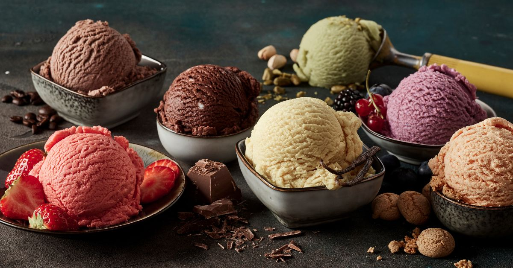

Two of the main ingredients in both ice cream and gelato are milk and cream, but it is the amount of each that results in differing desserts. As the name implies, "ice cream" contains more cream than milk, whereas gelato is made with a greater proportion of whole milk to cream. Another ingredient that distinguishes the two is eggs; ice cream includes egg yolks while gelato is (most often) completely void of eggs. These differing measurements and ingredients affect the amount of fat in each dessert, as well as the mouthfeel (the texture of the food in your mouth as you eat it). Legally, ice cream has to have a minimum of 10 percent fat; gelato contains only 5 to 7 percent fat.
It is not just the ingredients that separate the two, it is also the way that each is made. Ice cream and gelato must be churned to create that creamy, scoopable goodness, but it is the speed at which they are churned—and the resulting amount of air incorporated—that is different. Gelato is churned at a slower speed than ice cream, which creates a denser consistency since less air is whipped into the mixture. Gelato contains about 25 to 30 percent air, while ice cream can contain as much as 50 percent air. Once the ice cream and gelato are made, they are stored at certain temperatures to maintain the right consistency. Ice cream is typically served frozen, around 0 F, whereas gelato is typically stored and served at a slightly warmer temperature, around 15 F. This means gelato is not quite completely frozen, making the texture softer and silkier than ice cream.